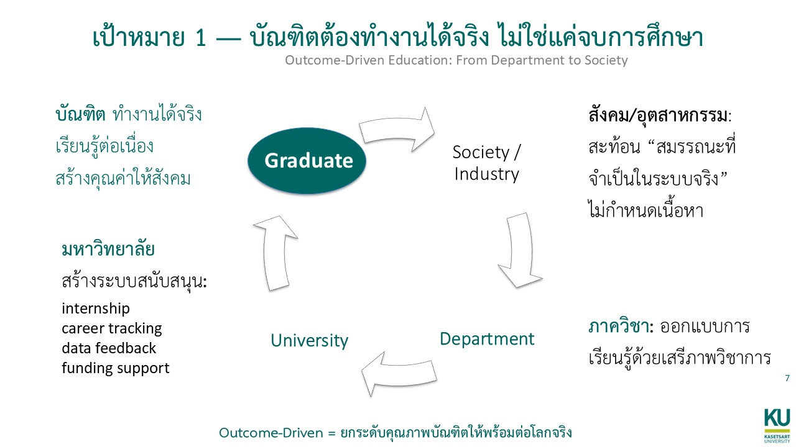

Goal 1
บัณฑิตต้องทำงานได้จริง ไม่ใช่แค่จบการศึกษา

เป้าหมายแรกเริ่มจากภาพของบัณฑิตที่มหาวิทยาลัยอยากเห็นก่อนเสมอ:
ต้อง ทำงานได้จริง, เรียนรู้ต่อเนื่อง,
และ สร้างคุณค่าให้สังคม ได้ ไม่ใช่เพียงสำเร็จการศึกษาตามเกณฑ์
ภาควิชายังเป็นเจ้าของการออกแบบการเรียนรู้
ผู้ที่ใกล้กับสาระวิชาการและผู้เรียนที่สุดยังคงต้องมีเสรีภาพทางวิชาการในการออกแบบหลักสูตร แต่เสรีภาพนั้นต้องเชื่อมกับ พันธกิจของมหาวิทยาลัย และ ผลลัพธ์ของผู้เรียนในโลกจริง ด้วย หมายความว่า ภาควิชาต้องไม่ถูกลดบทบาทลงเป็นเพียงผู้ปฏิบัติตามคำสั่งจากส่วนกลาง แต่ก็ไม่ควรออกแบบหลักสูตรแบบแยกขาดจากบริบทการเปลี่ยนแปลงของประเทศ เศรษฐกิจ และโลกการทำงาน
ผู้ที่ใกล้กับสาระวิชาการและผู้เรียนที่สุดยังคงต้องมีเสรีภาพทางวิชาการในการออกแบบหลักสูตร แต่เสรีภาพนั้นต้องเชื่อมกับ พันธกิจของมหาวิทยาลัย และ ผลลัพธ์ของผู้เรียนในโลกจริง ด้วย หมายความว่า ภาควิชาต้องไม่ถูกลดบทบาทลงเป็นเพียงผู้ปฏิบัติตามคำสั่งจากส่วนกลาง แต่ก็ไม่ควรออกแบบหลักสูตรแบบแยกขาดจากบริบทการเปลี่ยนแปลงของประเทศ เศรษฐกิจ และโลกการทำงาน
มหาวิทยาลัยต้องสร้างระบบสนับสนุน
คุณภาพบัณฑิตไม่ใช่ภาระของภาควิชาลำพัง มหาวิทยาลัยต้องทำให้ internship เชิงเป้าหมาย, career tracking, data feedback, และ funding support เกิดขึ้นจริง เพื่อให้การออกแบบหลักสูตรเชื่อมกับผลลัพธ์ ไม่ใช่ปล่อยให้ภาควิชาต้องไปหา partner เอง ติดตามผลเอง และแบกต้นทุนเองทุกขั้นตอน
คุณภาพบัณฑิตไม่ใช่ภาระของภาควิชาลำพัง มหาวิทยาลัยต้องทำให้ internship เชิงเป้าหมาย, career tracking, data feedback, และ funding support เกิดขึ้นจริง เพื่อให้การออกแบบหลักสูตรเชื่อมกับผลลัพธ์ ไม่ใช่ปล่อยให้ภาควิชาต้องไปหา partner เอง ติดตามผลเอง และแบกต้นทุนเองทุกขั้นตอน
โลกจริงสะท้อนสมรรถนะ แต่ไม่กำหนดเนื้อหา
ภาคอุตสาหกรรมและสังคมควรช่วยสะท้อนว่า สมรรถนะใดจำเป็นในระบบจริง โดยไม่เข้ามากำหนดเนื้อหาทางวิชาการแทนมหาวิทยาลัย ความสัมพันธ์แบบนี้ทำให้มหาวิทยาลัยยังรักษา ความเข้มข้นทางวิชาการไว้ได้ ขณะเดียวกันก็ไม่หลุดจากโลกจริงที่บัณฑิตต้องไปเผชิญหลังเรียนจบ
ภาคอุตสาหกรรมและสังคมควรช่วยสะท้อนว่า สมรรถนะใดจำเป็นในระบบจริง โดยไม่เข้ามากำหนดเนื้อหาทางวิชาการแทนมหาวิทยาลัย ความสัมพันธ์แบบนี้ทำให้มหาวิทยาลัยยังรักษา ความเข้มข้นทางวิชาการไว้ได้ ขณะเดียวกันก็ไม่หลุดจากโลกจริงที่บัณฑิตต้องไปเผชิญหลังเรียนจบ
การประเมินต้องวัดความสามารถจริง ไม่ใช่แค่การผ่านรายวิชา
ถ้าเป้าหมายคือบัณฑิตที่ ทำงานได้จริง การประเมินก็ต้องขยับจากการดูเพียงคะแนนปลายภาค ไปสู่การดู portfolio, project-based work, การอธิบายเหตุผล และความสามารถในการนำความรู้ไปใช้กับโจทย์จริง เพื่อให้มหาวิทยาลัยมั่นใจได้ว่าผู้เรียนไม่ได้เพียงจบหลักสูตร แต่พร้อมต่อโลกจริง
ถ้าเป้าหมายคือบัณฑิตที่ ทำงานได้จริง การประเมินก็ต้องขยับจากการดูเพียงคะแนนปลายภาค ไปสู่การดู portfolio, project-based work, การอธิบายเหตุผล และความสามารถในการนำความรู้ไปใช้กับโจทย์จริง เพื่อให้มหาวิทยาลัยมั่นใจได้ว่าผู้เรียนไม่ได้เพียงจบหลักสูตร แต่พร้อมต่อโลกจริง
เป้าหมายนี้จึงไม่ใช่เรื่อง employability แบบแคบ ๆ แต่คือการยกระดับคุณภาพบัณฑิต
ให้พร้อมต่อโลกจริงในฐานะ ผลลัพธ์ของทั้งระบบมหาวิทยาลัย
ตั้งแต่การออกแบบหลักสูตร การสนับสนุนจากส่วนกลาง ไปจนถึงการรับฟัง feedback จากสังคมและภาคการทำงาน